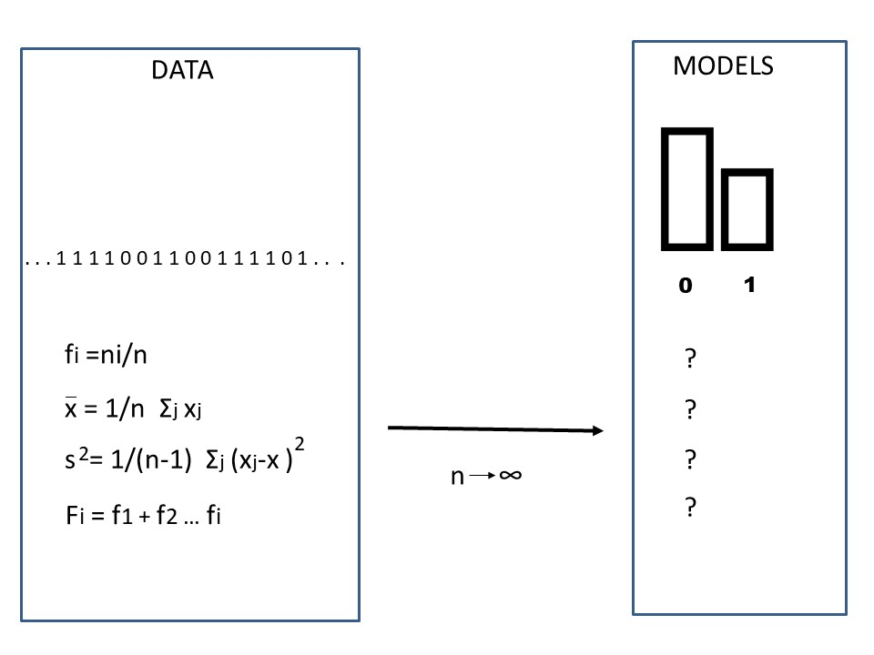
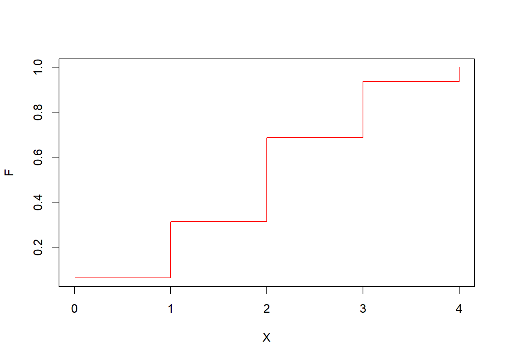

Chapter 5 Discrete Random Variables
5.1 Objective
In this chapter we will define a random variables and study discrete random variables.
We will define the probability mass function and its main properties of mean and variance. Following the abstraction process of the relative frequencies into probabilities we also define the probability distribution as the limiting case of the relative cumulative frequency.
5.2 Relative frequencies
Relative frequencies of the outcomes of a random experiment are a measure of their propensity. We can used them as estimators of their probabilities, when the we repeat the random experiment a lot of times (\(n \rightarrow \infty\)).
We defined central tendency (average), dispersion (sample variance) and the frequency distribution the data (\(F_i\)).
In terms of probabilities, how are this quantities defined?

5.3 Random variable
We defined the relative frequencies on the observations of the experiments. We now define the equivalent quantities for probabilities in terms of the outcomes of the experiments. We will deal with numerical outcomes only.
A random variable is a symbol that represents a numerical outcome of a random experiment. We write the random variable in capitals (i.e. \(X\)).
Definition:
A random variable is a function that assigns a real number to an event from the sample space of a random experiment.
Remember than an event can be an outcome or a collection of outcomes.
When the random variable takes a value, it indicates the realization of an event of a random experiment.
Example:
If \(X \in \{0,1\}\), we then say \(X\) is a random variable that can take the values \(0\) or \(1\).
5.4 Events of observing a random variable
We make the distinction between variables in the model space with capital letters, as abstract entities, and the realization of a particular event or outcome. For instance:
- \(X=1\) is the event of observing the random variable \(X\) with value \(1\)
- \(X=2\) is the event of observing the random variable \(X\) with value \(2\)
…
In general:
- \(X=x\) is the event of observing the random variable \(X\) (big \(X\)) with value \(x\) (little \(x\)).
5.5 Probability of random variables
We are interested in assigning probabilities to the events of observing a particular value of a random variable.
For instance for the dice we will write the probability table as
| \(X\) | Probability |
|---|---|
| \(1\) | \(P(X=1)=1/6\) |
| \(2\) | \(P(X=2)=1/6\) |
| \(3\) | \(P(X=3)=1/6\) |
| \(4\) | \(P(X=4)=1/6\) |
| \(5\) | \(P(X=5)=1/6\) |
| \(6\) | \(P(X=6)=1/6\) |
where we make explicit the events that the variable takes a given outcome \(X=x\).
5.6 Probability functions
Because (little) \(x\) is a numerical variable, the probabilities of the random variable can be plotted

or written as the mathematical function
\[f(x)=P(X=x)=1/6\]
5.7 Probability functions
We can create any type of probability function if we satisfy Kolmogorov’s probability rules:
For a discrete random variable \(X \in \{x_1 , x_2 , .. , x_M\}\), a probability mass function that is used to compute probabilities
- \(f(x_i)=P(X=x_i)\)
is always positive
- \(f(x_i)\geq 0\)
and its sum over all the values of the variable is \(1\):
- \(\sum_{i=1}^M f(x_i)=1\)
Where \(M\) is the number of possible outcomes.
Note that the definition of \(X\) and its probability mass function is general without reference to any experiment. The functions live in the model (abstract) space.
Here is an example

\(X\) and \(f(x)\) are abstract objects that may or may not map to an experiment. We have the freedom to construct them as we want as long as we respect their definition.
Probability mass functions have some properties that are derived exclusively from their definition.
5.8 Probabilities and relative frequencies
Consider the example
Make following set-up: In one urn put \(8\) balls and:
- mark \(1\) ball with \(-2\)
- mark \(2\) balls with \(-1\)
- mark \(2\) balls with \(0\)
- mark \(2\) balls with \(1\)
- mark \(1\) ball with \(2\)
And consider performing the following random experiment: Take one ball and read the number.
From the classical probability, we can write the probability table, for which we do not need to run any experiment
| \(X\) | \(P(X=x)\) |
|---|---|
| \(-2\) | \(1/8=0.125\) |
| \(-1\) | \(2/8=0.25\) |
| \(0\) | \(2/8=0.25\) |
| \(1\) | \(2/8=0.25\) |
| \(2\) | \(1/8=0.125\) |
Now, let’s perform the experiment \(30\) times and write the frequency table
| \(X\) | \(f_i\) |
|---|---|
| \(-2\) | \(0.132\) |
| \(-1\) | \(0.262\) |
| \(0\) | \(0.240\) |
| \(1\) | \(0.248\) |
| \(2\) | \(0.118\) |
The frequentist probability tells us \[lim_{N \rightarrow \infty} f_i = f(x_i)=P(X=x_i)\] Then, if we did not know the set up of the experiment (black box), the best we can do is to estimate the probabilities with the frequencies, obtained from \(N\) repetitions of the random experiment:
\[f_i = \hat{P}_i\]

Everytime we estimate the probabilities, our estimates \(\hat{P}_i=f_i\) change. But \(P_i\) is an abstract quantity that never changes. As \(N\) increases we get closer to it.
5.9 Mean or expected value
When we discussed summary statistics of data, we defined the centre of the observations as a value around which the outcome frequencies are concentrated.
We used the average to measure the centre of gravity of the data. In terms of the relative frequencies of the values of discrete outcomes, we wrote the average as
\(\bar{x}= \sum_{i=1}^M x_i \frac{n_i}{N}=\) \[\sum_{i=1}^M x_i f_i\]
Definition
The mean (\(\mu\)) or expected value of a discrete random variable \(X\), \(E(X)\), with mass function \(f(x)\) is given by
\[ \mu = E(X)= \sum_{i=1}^M x_i f(x_i) \]

It is the center of gravity of the probabilities: The point where probability loading on a road are balanced.
From the definition we have
\[\bar{x} \rightarrow \mu\] in the limit when \(N \rightarrow \infty\) as the frequency tends to the probability mass fucntion \(f_i \rightarrow f(x_i)\).
Example
What is the mean of \(X\) if its probability mass function \(f(x)\) is given by
| \(X\) | \(f(x)=P(X=x)\) |
|---|---|
| \(0\) | \(1/16\) |
| \(1\) | \(4/16\) |
| \(2\) | \(6/16\) |
| \(3\) | \(4/16\) |
| \(4\) | \(1/16\) |

\[ \mu =E(X)=\sum_{i=1}^m x_i f(x_i) \]
\(E(X)=\)0 * 1/16 + 1 * 4/16 + 2 * 6/16 + 3 * 4/16 + 4 * 1/16 =2
The mean \(\mu\) is the centre of gravity of the probability mass function it does not change. However, the average \(\bar{x}\) is the centre of gravity of the observations (relative frequencies) it changes with different data.
5.10 Variance
When we discussed summary statistics of data, we also defined the spread of the observations as an average distance from the data average.
Definition
The variance, written as \(\sigma^2\) or \(V(X)\), of a discrete random variable \(X\) with mass function \(f(x)\) is given by
\[\sigma^2 = V(X)= \sum_{i=1}^M (x_i-\mu)^2 f(x_i)\] \(\sigma=\sqrt{V(X)}\) is called the standard deviation of the random variable.
Teh variance is the spread of the probabilities about the mean: The moment of inertia of probabilities about the mean.
Example
What is the variance of \(X\) if its probability mass function \(f(x)\) is given by
| \(X\) | \(f(x)=P(X=x)\) |
|---|---|
| \(0\) | \(1/16\) |
| \(1\) | \(4/16\) |
| \(2\) | \(6/16\) |
| \(3\) | \(4/16\) |
| \(4\) | \(1/16\) |
\[\sigma^2 =V(X)=\sum_{i=1}^m (x_i-\mu)^2 f(x_i)\]
\(V(X)=\)(0-2)\(^2\)* 1/16 + (1-2)\(^2\)* 4/16 + (2-2)\(^2\)* 6/16 + (3-2)\(^2\)* 4/16 + (4-2)\(^2\)* 1/16 =1
\[V(X)=\sigma^2=1\] \[\sigma=1\]
5.11 Probability functions for functions of \(X\)
In many occasions, we will be interested in outcomes that are function of the random variables. Perhaps, we are interested in the square of the number of flu infections, or on the square root of the number of emails in an hour.
Definition
For any function \(h\) of a random variable \(X\), with mass function \(f(x)\), its expected value is given by
\[ E[h(X)]= \sum_{i=1}^M h(x_i) f(x_i) \]
This is an important definition that allows us to prove three frequently used properties of the mean and variance:
The mean of a linear function is the linear function fo the mean: \[E(a\times X +b)= a\times E(X) +b\] for \(a\) and \(b\) scalars (numbers).
The variance of a linear function of \(X\) is:\[V(a\times X +b)= a^2\times V(X)\]
The variance about the origin is the variance about the mean plus the mean squared: \[E(X^2)=V(X)+E(X)^2\]
Example
What is the variance \(X\) about the origin, \(E(X^2)\), if its probability mass function \(f(x)\) is given by
| \(X\) | \(f(x)=P(X=x)\) |
|---|---|
| \(0\) | \(1/16\) |
| \(1\) | \(4/16\) |
| \(2\) | \(6/16\) |
| \(3\) | \(4/16\) |
| \(4\) | \(1/16\) |
\[E(X^2) =\sum_{i=1}^m x_i^2 f(x_i)\]
\(E(X^2)=\)(0)\(^2\)* 1/16 + (1)\(^2\)* 4/16 + (2)\(^2\)* 6/16 + (3)\(^2\)* 4/16 + (4)\(^2\)* 1/16 =5
We can also verify:
\[E(X^2)=V(X)+E(X)^2\]
\(5=1+2^2\)
5.12 Probability distribution
When we discussed summary statistics of data, we also defined the frequency distribution (or the relative cumulative frequency) \(F_i\). \(F_i\) is an important quantity because it is a continuous function \(F_x\) is therefore a continuous function, even if the outcomes are discrete.
Definition:
The probability distribution function is defined as
\[F(x)=P(X\leq x)=\sum_{x_i\leq x} f(x_i) \]
That is the accumulated probability up to a given value \(x\)
\(F(x)\) satisfies therefore satisifies:
- \(0\leq F(x) \leq 1\)
- If \(x \leq y\), then \(F(x) \leq F(y)\)
For the probability mass function:
| \(X\) | \(f(x)=P(X=x)\) |
|---|---|
| \(0\) | \(1/16\) |
| \(1\) | \(4/16\) |
| \(2\) | \(6/16\) |
| \(3\) | \(4/16\) |
| \(4\) | \(1/16\) |
The probability distribution is:
\[ F(x)= \begin{cases} 1/16,& \text{if } 0 \leq x < 1\\ 5/16,& 1\leq x < 2\\ 11/16,& 2\leq x < 3\\ 15/16,& 4\leq x < 5\\ 16/16,& x \leq 5\\ \end{cases} \]
For\(X \in \mathbb{Z}\)

5.13 Probability function and probability distribution
The probability function and distribution are equivalent. We can get one from the other and vice-versa
\[f(x_i)=F(x_i)-F(x_{i-1})\]
with
\[f(x_1)=F(x_1)\]
for \(X\) taking values in \(x_1 \leq x_2 \leq ... \leq x_n\)
Example
From probability distribution:
\[ F(x)= \begin{cases} 1/16,& \text{if } 0 \leq x < 1\\ 5/16,& 1\leq x < 2\\ 11/16,& 2\leq x < 3\\ 15/16,& 4\leq x < 5\\ 16/16,& x \leq 5\\ \end{cases} \]
We can obtain the probability mas function.
\(f(0)=F(0)=1/16\) \(f(1)=F(1)-f(0)=5/32-1/32=4/16\) \(f(2)=F(2)-f(1)-f(0)=F(2)-F(1)=6/16\) \(f(3)=F(3)-f(2)-f(1)-f(0)=F(3)-F(2)=4/16\) \(f(4)=F(4)-F(3)=1/16\)
5.14 Quantiles
Finally, we can use the probability distribution \(F(x)\) to define the median and the quartiles of the radom variable \(X\).
In general, we define the q-quantile as the value \(x_{p}\) under which we have accumulated q*100% of the probability
\[q=\sum_{i=1}^p f(x_i) = F (x_p)\]
- The median is value \(x_m\) such that \(q=0.5\)
\[F(x_{m})=0.5\]
- The \(0.05\)-quantile is the value \(x_{r}\) such that \(q=0.05\)
\[F(x_{r})=0.05\]
- The \(0.25\)-quantile is first quartile the value \(x_{s}\) such that \(q=0.25\)
\[F(x_{s})=0.25\]
5.15 Summary

| quantity names | model (unobserved) | data (observed) |
|---|---|---|
| probability mass function // relative frequency | \(f(x_i)=P(X=x_i)\) | \(f_i=\frac{n_i}{N}\) |
| probability distribution // cumulative relative frequency | \(F(x_i)=P(X \leq x_i)\) | \(F_i=\sum_{k\leq i} f_k\) |
| mean // average | \(\mu=E(X)=\sum_{i=1}^M x_i f(x_i)\) | \(\bar{x}=\sum_{j=1}^N x_j/N\) |
| variance // sample variance | \(\sigma^2=V(X)=\sum_{i=1}^M (x_i-\mu)^2 f(x_i)\) | \(s^2=\sum_{j=1}^N (x_j-\bar{x})^2/(N-1)\) |
| standard deviation // sample sd | \(\sigma=\sqrt{V(X)}\) | \(s\) |
| variance about the origin // 2nd sample moment | \(E(X^2)=\sum_{i=1}^M x_i^2 f(x_i)\) | \(m_2= \sum_{j=1}^N x_j^2/n\) |
Note that:
- \(i=1...M\) is an outcome of the random variable \(X\).
- \(j=1...N\) is an observation of the random variable \(X\).
Properties:
- \(\sum_{i=1...N} f(x_i)=1\)
- \(f(x_i)=F(x_i)-F(x_{i-1})\)
- \(E(a\times X +b)= a\times E(X) +b\); for \(a\) and \(b\) scalars.
- \(V(a\times X +b)= a^2\times V(X)\)
- \(E(X^2)=V(X)+E(X)^2\)
5.16 Questions
1) For a probability mass function is not true that
\(\qquad\)a: the addition of their image values is 1; \(\qquad\)b: its values can be interpreted as probabilities of events; \(\qquad\)c: it is always positive; \(\qquad\)d: cannot take value 1;
2) A value of a random variable is
\(\qquad\)a: an observation of a random experiment; \(\qquad\)b: the frequency of an outcome of a random experiment; \(\qquad\)c: an outcome of a random experiment; \(\qquad\)d: a probability of an outcome;
3) The estimated value of a probability \(\hat{P_i}\) is equal to the probability \(P_i\) when the number of repetitions of the random experiment is
\(\qquad\)a: large; \(\qquad\)b: infinite; \(\qquad\)c: small \(\qquad\)d: zero;
4) If a probability mass function is symmetric around \(x=0\)
\(\qquad\)a: The mean is lower than the median; \(\qquad\)b: The mean is greater than the median; \(\qquad\)c: The mean and the median are equal; \(\qquad\)d: The mean and the median are different from 0;
5) The mean and variance
\(\qquad\)a: are inversely proportional; \(\qquad\)b: are expected values of functions of \(X\); \(\qquad\)c: of a linear function are the linear function of the mean and the linear function of the variance; \(\qquad\)d: change when we repeat the random experiment;
5.17 Exercises
5.17.0.1 Exercise 1
Consider the following random variable \(X\) over the outcomes
| outcome | \(X\) |
|---|---|
| \(a\) | 0 |
| \(b\) | 0 |
| \(c\) | 1.5 |
| \(d\) | 1.5 |
| \(e\) | 2 |
| \(f\) | 3 |
If each outcome is equally probable then what is the probability mass function of \(x\)?
Find:
- \(P(X>3)\)
- \(P(X=0\, \cup \, X=2 )\)
- \(P(X \leq 2)\)
5.17.0.2 Exercise 2
Given the probability mass function
| \(x\) | \(f(x)=P(X=x)\) |
|---|---|
| 10 | 0.1 |
| 12 | 0.3 |
| 14 | 0.25 |
| 15 | 0.15 |
| 17 | ? |
| 20 | 0.15 |
- what is its expected value and standard deviation? (R: 14.2; 2.95)
5.17.0.3 Exercise 3
Given the probability distribution for a discrete variable \(X\)
\[ F(x)= \begin{cases} 0, & x < -1 \\ 0.2,& x \in [-1,0)\\ 0.35,& x \in [0,1)\\ 0.45,& x \in [1,2)\\ 1,& x \geq 2\\ \end{cases} \]
- find \(f(x)\)
- find \(E(X)\) and \(V(X)\) (R:1; 1.5)
- what is the expected value and variance of \(Y=2X+3\) (R: 6)
- what is the median and the first and third quartiles of \(X\)? (R:2,0,2)
5.17.0.4 Exercise 4
We are testing a system to transmit digital pictures. We first consider the experiment of sending \(3\) pixels and having as possible outcomes events such like \((0,1,1)\). This is the event of receiving the first pixel with no error, the second with error and third with error.
List in one column the sample space of the random experiment.
In the a second column assign the random variable that counts the number of errors transmitted for each outcome
Consider that we have a totally noisy channel, that is any outcome of three pixels is equally likely.
What is the probability of receiving \(0\), \(1\), \(2\), or \(3\) errors in the transmission of \(3\) pixels? (R: 1/8; 3/8; 3/8; 1/8)
Sketch the probability mass function for the number of errors
What is the expected value for the number of errors? (R:1.5)
What is its variance? (R: 0.75)
Sketch the probability distribution
What is the probability of transmitting at least 1 error? (R:7/8)